Guía práctica de la plataforma Novvus: acceso, módulos de trabajo y los flujos que conectan ventas, proyectos, logística, finanzas y talento.
Producto
Novvus Core 0.3.72
Versión
1.0
Fecha
18 de noviembre de 2026
Audiencia
Usuarios y administradores
Idioma
Español
Ambiente
http://localhost:8077
Novvus · Documentación de usuarioUso interno
CONTENIDO
Índice
Nueve capítulos, diecinueve capturas de pantalla y ocho diagramas.
1. Presentación
1.1¿Qué es Novvus?
1.2A quién está dirigido
1.3Mapa de módulos
2. Primeros pasos
2.1Requisitos y dirección de acceso
2.2Iniciar sesión
2.3Cuentas de demostración
2.4La pantalla de inicio
2.5Sus módulos
2.6Navegación y atajos de interfaz
2.7Términos de la interfaz
2.8Búsqueda, notificaciones y perfil
3. Aplicaciones y administración
3.1Catálogo de aplicaciones
3.2Miembros, roles y permisos
4. Los módulos de trabajo
4.1CRM
4.2Proyectos
4.3Reclutamiento
4.4Logística
4.5Auditorías
4.6Facturación
4.7Inventario
4.8Automatización
5. Flujos de trabajo guiados
5.1De la oportunidad a la entrega
5.2De la contratación al proyecto
5.3Entrega de un envío y stock
5.4Automatización de procesos
5.5Ciclo de vida de una factura
5.6Casos de uso por rol
6. Buenas prácticas
6.1Higiene de datos
6.2Trabajo en equipo
6.3Rendimiento de la interfaz
6.4Seguridad y respaldo
7. Preguntas frecuentes
7.1Acceso y sesión
7.2Datos y módulos
8. Glosario
8.1Términos del sistema
9. Anexos
9.1Arquitectura en una página
9.2Diagrama de despliegue
9.3Modelo de datos
9.4Contenido del paquete
9.5Verificación rápida del paquete
9.6Para continuar
Cómo leer este manual
El manual avanza de lo general a lo particular. Los capítulos 2 y 3 explican cómo entrar y cómo se administra la plataforma. El capítulo 4 recorre cada módulo con su captura de pantalla y las tareas que permite realizar. El capítulo 5 reconstruye los flujos completos de negocio con diagramas: es la parte más útil para entender cómo se conecta todo. Los capítulos 6 a 9 concentran buenas prácticas, preguntas frecuentes, glosario y anexos técnicos.
Si es su primer contacto con el sistema, lea el capítulo 2 y luego el 4.1. Si ya lo conoce y necesita resolver una duda concreta, el índice y las preguntas frecuentes bastan.
Convenciones del documento
Negritas para el nombre exacto de un botón, campo o vista.
Texto monoespaciado para direcciones, correos y nombres técnicos.
Los recuadros de borde negro amplían un concepto; los de fondo gris advierten un riesgo; la marca ✓ señala un consejo.
Las capturas corresponden al ambiente de demostración con datos de ejemplo; los diagramas con fondo claro se pueden ampliar sin perder nitidez.
01
Presentación
Qué resuelve Novvus y cómo leer este manual.
1.1 ¿Qué es Novvus?
Novvus es una suite empresarial modular. Reúne en una sola aplicación el trabajo comercial, la ejecución de proyectos, la operación logística, el control de calidad, la facturación, el inventario y el talento humano.
Cada área de negocio funciona como un módulo independiente con su propia interfaz, sus datos y sus permisos, pero todos comparten la misma sesión, el mismo buscador y el mismo panel de inicio. Cuando algo ocurre en un módulo —una cotización se acepta, una oportunidad se gana, un candidato se contrata— los demás módulos se enteran y actúan en consecuencia sin que nadie tenga que capturar la información dos veces.
El resultado es una operación donde el dato viaja solo: la cotización aceptada genera el proyecto, el envío y la factura; el envío entregado deja la actividad en el CRM y descuenta inventario; la contratación de un candidato crea el contacto y el proyecto de integración.
Una sola entrada
Sesión única
Un usuario, una contraseña y un conmutador de módulos. Sin ventanas separadas ni accesos distintos por área.
Datos conectados
Información que fluye
Los módulos se comunican mediante eventos de negocio, no mediante captura manual duplicada.
Por roles
Permisos granulares
Cada persona ve los módulos y registros que le corresponden según su rol en la organización.
Escalable
Se instala lo que se usa
El catálogo de aplicaciones permite activar nuevos módulos sin reinstalar la plataforma.
1.2 A quién está dirigido
Perfil
Uso principal del sistema
Capítulos sugeridos
Dirección y administración
Panel general, usuarios, roles, catálogo de aplicaciones y seguimiento global.
2, 3 y 6
Equipo comercial
Empresas, contactos, oportunidades, cotizaciones y seguimiento de actividades.
4.1 y 5.1
Project management
Portafolio, fases, tareas, hitos, riesgos y avance de cada proyecto.
4.2 y 5.2
Operaciones y logística
Almacenes, transportistas, envíos y entregas.
4.4 y 5.3
Calidad
Auditorías, listas de verificación, hallazgos e informes.
4.5
Finanzas
Facturas, pagos y saldos pendientes.
4.6 y 5.5
Almacén e inventario
Productos, existencias y movimientos.
4.7 y 5.3
Recursos Humanos
Vacantes, candidatos, entrevistas y ofertas.
4.3 y 5.2
1.3 Mapa de módulos
La siguiente figura resume cómo se relacionan los ocho módulos. Cada flecha es un evento de negocio: el módulo de origen lo publica y el de destino reacciona de forma automática.
Figura 1. Mapa de integración entre módulos. Las etiquetas indican el evento que dispara la acción.
Módulo
Categoría
Qué controla
Se conecta con
CRM
Ventas
Empresas, contactos, prospectos, oportunidades, actividades, productos y cotizaciones.
Proyectos, Logística, Facturación, Automatización
Proyectos
Operaciones
Portafolio, fases, procesos, tareas, hitos, entregables, riesgos y plantillas.
CRM, Automatización
Reclutamiento
Recursos Humanos
Puestos, candidatos, postulaciones, entrevistas y ofertas.
CRM, Proyectos
Logística
Operaciones
Almacenes, transportistas, vehículos, envíos y órdenes de entrega.
CRM, Inventario
Auditorías
Calidad
Auditorías internas y externas, listas de verificación, hallazgos e informes.
Automatización, CRM
Facturación
Finanzas
Facturas, líneas de factura, pagos y control de saldos.
CRM, Automatización
Inventario
Operaciones
Productos, existencias por almacén y movimientos de entrada y salida.
Logística, CRM
Automatización
Operaciones
Procesos, pasos, ejecuciones, registros y notificaciones.
Todos
02
Primeros pasos
Del navegador a su primer registro en cinco minutos.
2.1 Requisitos y dirección de acceso
Novvus se usa desde el navegador; no requiere instalar nada en el equipo del usuario. El ambiente documentado se ejecuta en el mismo equipo mediante contenedores y queda disponible en la dirección:
http://localhost:8077
Navegador recomendado: Chrome, Brave o Microsoft Edge en su versión reciente. También funciona en Firefox y Safari actuales.
Resolución mínima: 1280 × 720 px. La interfaz aprovecha pantallas de 1920 px en adelante para mostrar tablas más anchas.
Conectividad: la aplicación se sirve en la red local; no necesita Internet salvo que se configure un despliegue remoto.
2.2 Iniciar sesión
Al abrir la dirección aparece la pantalla de acceso. Escriba su correo (o nombre de usuario) y su contraseña, y pulse Entrar.
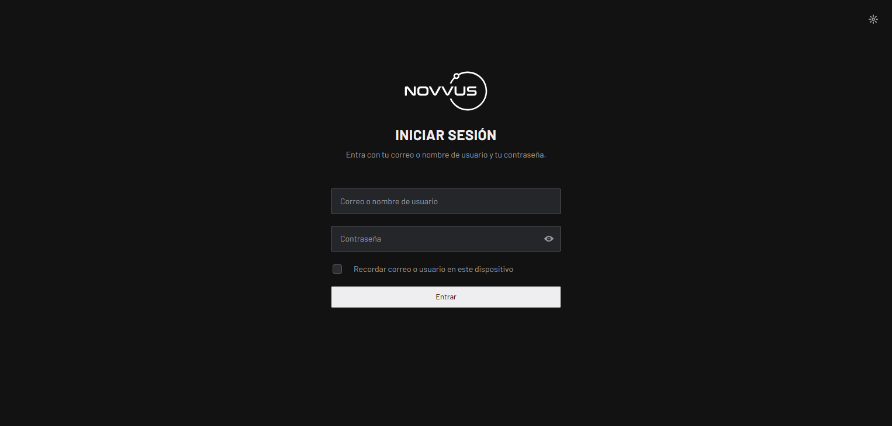
Figura 2. Pantalla de inicio de sesión. El conmutador superior derecho cambia entre tema claro y oscuro.
Escriba el correo o nombre de usuario. El campo no distingue mayúsculas de minúsculas.
Escriba la contraseña. Use el botón Mostrar en claro si necesita verificarla antes de continuar.
Marque Recordar correo o usuario en este dispositivo si trabaja siempre desde el mismo equipo; la contraseña nunca se guarda.
Pulse Entrar. La sesión queda activa y se abre el panel de inicio.
!
Si el acceso falla Verifique que el servicio esté en ejecución. Un error de credenciales vuelve a mostrar el formulario sin borrar el correo; un error de red muestra un mensaje de servicio no disponible.
2.3 Cuentas de demostración
El ambiente incluye una cuenta administradora y seis cuentas de equipo para probar el comportamiento por rol.
Cuenta
Nombre
Uso sugerido
saulgutierrez143@gmail.com
Administrador de Novvus
Acceso total: administración, todos los módulos y configuración.
ventas@novvus.demo
Equipo Ventas
Recorrido comercial: empresas, oportunidades y cotizaciones.
proyectos@novvus.demo
Equipo Proyectos
Portafolio, tareas e hitos.
logistica@novvus.demo
Equipo Logística
Almacenes, transportistas y envíos.
rrhh@novvus.demo
Equipo Reclutamiento
Vacantes, candidatos y entrevistas.
auditoria@novvus.demo
Equipo Auditoría
Auditorías, hallazgos y planes de acción.
automatizacion@novvus.demo
Equipo Automatización
Procesos, pasos y ejecuciones.
Contraseña común para las cuentas de demostración: Demo2026!. La cuenta administradora usa su propia contraseña.
2.4 La pantalla de inicio
El inicio es un panel de mando: reúne el estado de todos los módulos que la organización tiene instalados. Cada tarjeta muestra sus indicadores clave, la hora de la última actualización y un botón para refrescar solo ese bloque.
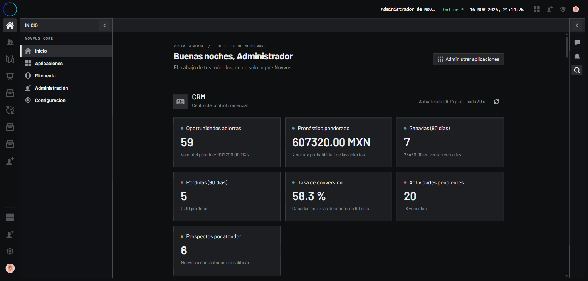
Figura 3. Panel de inicio. Arriba, el saludo y el resumen del día; debajo, una tarjeta por módulo con sus indicadores.
Los elementos de la pantalla son:
Saludo y fecha
Contexto de la sesión; el saludo cambia según la hora del día.
Tarjeta CRM
Valor del pipeline, ventas cerradas, oportunidades vencidas y las cinco oportunidades próximas a cerrar.
Tarjetas del resto
Auditorías en curso, facturas vencidas y pagadas, productos bajo mínimo, envíos recientes y candidatos en entrevista.
Actualizar
Cada tarjeta se actualiza de forma independiente cada 30 segundos o al pulsar su botón.
Tus módulos
Accesos directos a cada aplicación, con su categoría.
2.5 Sus módulos
Figura 4. Bloque «Tus módulos»: un acceso por aplicación instalada, ordenado por categoría.
Pulse cualquier tarjeta para abrir el módulo. El menú lateral izquierdo cambia entonces a las vistas de ese módulo y el encabezado indica en todo momento dónde está.
2.6 Navegación y atajos de interfaz
La misma gramática visual se repite en todos los módulos. Estos son los elementos que encontrará una y otra vez, sin importar en cuál esté trabajando.
Barra lateral y vistas
La barra de iconos cambia de módulo; el panel contiguo lista sus vistas y se colapsa con la flecha superior. El icono resaltado marca dónde está.
Encabezado superior
Usuario, estado de conexión, fecha y hora, y accesos a aplicaciones, notificaciones y configuración.
Exportar y Nuevo
Exportar descarga la vista actual; Nuevo crea un registro del tipo que se está viendo.
Kanban · Lista · Calendario
Cambian la forma de presentar los mismos datos, según lo que soporte cada módulo.
Buscar y Filtros
Búsqueda de texto sobre la vista y filtros por campo, con agrupación opcional.
Panel derecho y ficha
El icono superior derecho abre el modo agente, las notificaciones y la búsqueda global. Un clic en un nombre abre su ficha.
2.7 Términos de la interfaz
Estas palabras aparecen en botones, encabezados y mensajes. Conviene fijar su significado desde el principio para que las instrucciones de este manual se lean sin ambigüedad.
Término
Qué significa en pantalla
Vista
La presentación de un conjunto de registros: lista, tablero, calendario o cronograma.
Registro
Una fila o tarjeta concreta: una empresa, una oportunidad, una factura.
Ficha
La pantalla de detalle de un registro, con campos, adjuntos, historial y acciones.
Alcance
El subconjunto de módulos que un usuario puede abrir dentro de su organización.
Filtro
Una condición sobre un campo que reduce lo que muestra la vista; puede combinarse con otras.
Exportar
Descargar en hoja de cálculo exactamente lo que la vista está mostrando, incluidos sus filtros.
2.8 Búsqueda, notificaciones y perfil
El encabezado superior concentra tres accesos que se usan a diario y que conviene conocer desde la primera sesión.
Búsqueda global. El icono de lupa busca en los registros de los módulos a los que tiene acceso: empresas, contactos, oportunidades, cotizaciones y facturas. Respeta los permisos, de modo que nunca muestra un resultado que la vista correspondiente ocultaría.
Notificaciones. La campana abre la bandeja de avisos: tareas vencidas, automatizaciones ejecutadas y menciones. Los avisos se marcan como leídos al abrirlos y dejan de contar en el indicador.
Perfil y sesión. El nombre del usuario abre su cuenta, el conmutador de tema claro u oscuro y la opción de cerrar sesión en el dispositivo.
i
La campana no reemplaza el panel El panel de inicio resume el estado del negocio; la bandeja de notificaciones avisa de lo que requiere una acción concreta. Si una alerta se repite cada día, probablemente sea un proceso que necesita un responsable, no una notificación más.
03
Aplicaciones y administración
Qué hay instalado, quién entra y con qué alcance.
3.1 Catálogo de aplicaciones
La pantalla Aplicaciones es el catálogo de módulos de la organización. Arriba, los contadores separan lo instalado de lo disponible en el marketplace; las pestañas permiten filtrar por origen de la licencia.
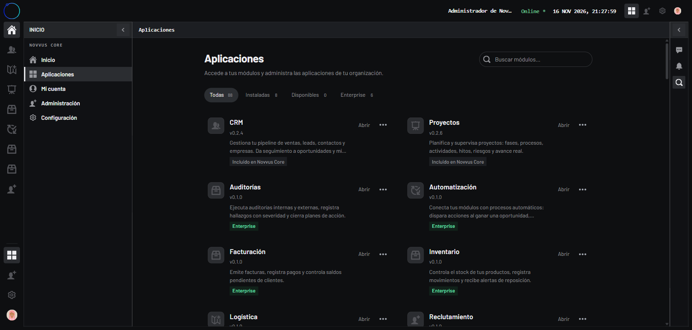
Figura 5. Catálogo de aplicaciones. Cada tarjeta indica versión, descripción, licencia y accesos directos.
Abrir entra al módulo. Es equivalente a pulsar su icono en la barra lateral.
El menú de tres puntos concentra las acciones de la aplicación: configuración, permisos y desinstalación cuando la licencia lo permite.
La etiqueta Incluido en Novvus Core identifica los módulos base; Enterprise identifica los módulos de negocio añadidos.
El buscador filtra por nombre en todo el catálogo, no solo entre las aplicaciones instaladas.
✓
Consejo Use el catálogo, no la barra lateral, cuando necesite consultar la versión instalada de un módulo o revisar su descripción funcional antes de asignarlo a un equipo.
3.2 Miembros, roles y permisos
La pantalla Administración concentra la gestión de personas. La pestaña Miembros lista a todos los usuarios de la organización con su estado, su alcance y las acciones disponibles.
i
Tres decisiones, en este orden Primero membresía: si la persona pertenece o no a la organización. Después rol: qué puede hacer. Al final alcance: sobre qué módulos. Cambiar el alcance nunca amplía lo que el rol prohíbe.
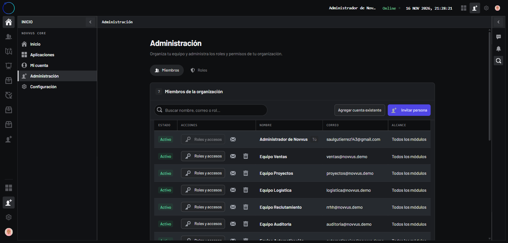
Figura 6. Administración de miembros: estado, roles y accesos, nombre, correo y alcance de cada usuario.
Invitar y dar de alta
Pulse Invitar persona para enviar una invitación por correo, o Agregar cuenta existente si la persona ya pertenece a otra organización de la plataforma.
Asigne uno o varios roles. Los roles determinan los módulos visibles y las operaciones permitidas sobre cada tipo de registro.
Defina el alcance: todos los módulos o un subconjunto concreto.
Guarde. El usuario recibe el acceso de inmediato y aparece como Activo en la lista.
Roles y accesos
El botón Roles y accesos de cada fila abre el detalle de permisos. Los permisos se expresan por módulo y por recurso, con operaciones de lectura, escritura y administración; un permiso ausente oculta la vista correspondiente en lugar de mostrar un error.
Acción
Efecto
Reversible
Invitar persona
Crea la cuenta y envía el correo de activación.
Sí, cancelando la invitación
Cambiar rol
Modifica módulos y operaciones visibles en la siguiente carga.
Sí
Desactivar acceso
Impide el inicio de sesión sin borrar los registros del usuario.
Sí
Eliminar miembro
Retira al usuario de la organización y libera su licencia.
No
!
Antes de eliminar Reasigne los registros del usuario (oportunidades, proyectos, envíos) a otra persona. Los registros no se borran, pero quedan sin responsable visible.
04
Los módulos de trabajo
Qué hace cada aplicación y cómo se usa en el día a día.
Todos los módulos comparten la misma gramática de interfaz: un panel de vistas a la izquierda, una barra de acciones arriba, un conmutador de presentación y una tabla paginada. Aprender un módulo es, en la práctica, aprender todos.
i
Patrón comúnExportar descarga la vista, Nuevo crea un registro, Buscar filtra por texto y Filtros permite combinar condiciones por campo. Los registros se abren con un clic sobre su nombre.
4.1 CRM
El CRM es el punto de partida comercial. Organiza empresas y contactos, convierte prospectos en oportunidades, hace seguimiento con actividades y formaliza la venta con cotizaciones.
Figura 7. Oportunidades en vista de lista: nombre, empresa, etapa, importe, probabilidad y fecha estimada de cierre.
Qué puede hacer
Registrar empresas con datos fiscales, industria, teléfono, correo y dirección.
Administrar contactos vinculados a una o varias empresas.
Gestionar oportunidades en un pipeline por etapas, con importe, probabilidad y fecha de cierre estimada.
Programar actividades (llamadas, reuniones, tareas) y consultar las vencidas desde el inicio.
Emitir cotizaciones con líneas, impuestos y vigencia.
Exportar cualquier vista y filtrar por estado, propietario o prioridad.
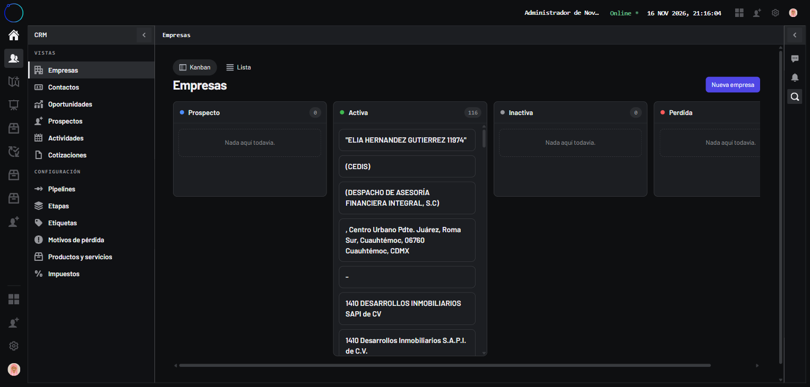
Figura 8. Empresas: nombre, industria, estado comercial, tipo y datos de contacto.
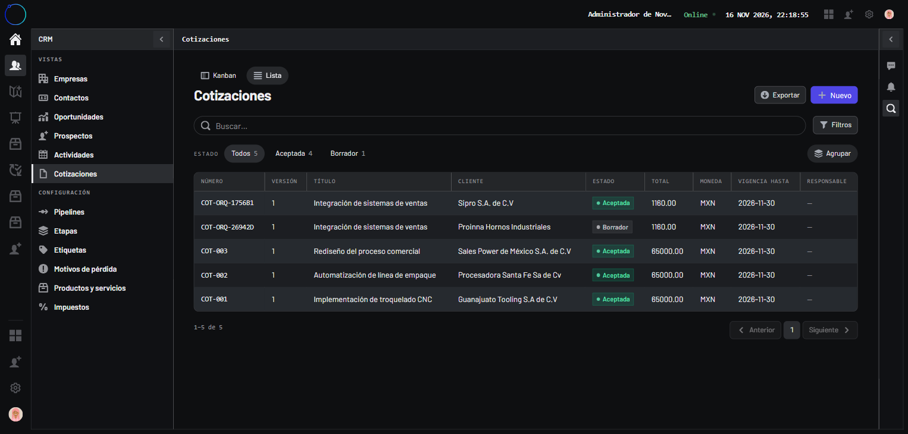
Figura 9. Cotizaciones con folio, cliente, total y estado.Figura 10. Actividades de proyecto en tablero, agrupadas por estado.
✓
Regla práctica Una oportunidad solo avanza de etapa cuando hay evidencia: una reunión realizada, una cotización enviada o una fecha de cierre confirmada. El tablero es un reflejo de la realidad, no un lugar para maquillar el pronóstico.
4.2 Proyectos
Proyectos convierte el trabajo vendido en ejecución medible. El módulo organiza el portafolio en fases, procesos con etapas, tareas con subtareas, hitos, entregables, dependencias y riesgos.
Portafolio: todos los proyectos con su estado, avance y responsable.
Tablero: las actividades del proyecto en columnas por estado, para las reuniones de seguimiento.
Plan: fases, procesos y tareas con fechas y dependencias.
Control: hitos, entregables, riesgos, aprobaciones y líneas de trabajo.
Plantillas: estructuras reutilizables para tipos de proyecto recurrentes.
Cuando una oportunidad del CRM se marca como ganada, el módulo crea automáticamente el proyecto correspondiente y lo deja listo para planificar.
4.3 Reclutamiento
Figura 11. Candidatos con estado del proceso, fuente de origen y datos de contacto.
El módulo cubre el ciclo completo de selección: publicación de la vacante, registro de candidatos, postulaciones, entrevistas y oferta. Al marcar un candidato como contratado, se crea el contacto en el CRM y el proyecto de integración en Proyectos.
Puestos: título, departamento, ubicación, rango salarial y requisitos.
Candidatos: datos de contacto, fuente (LinkedIn, referido, bolsa) y estado.
Postulaciones y entrevistas: relación candidato–puesto con evaluación y resultado.
Ofertas: condiciones económicas y seguimiento de aceptación.
4.4 Logística
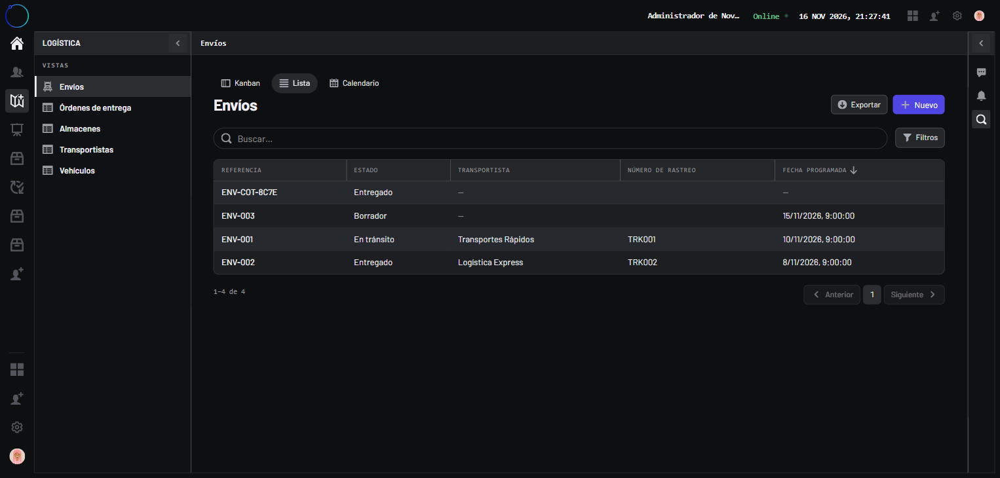
Figura 12. Envíos con referencia, estado, transportista y número de guía.
Logística administra almacenes, transportistas, vehículos y envíos. Cada envío se puede seguir hasta su entrega; al marcarlo como entregado se registra la actividad correspondiente en el CRM y se actualiza el inventario.
Almacenes: origen de cada despacho.
Transportistas y vehículos: capacidad, placas y disponibilidad.
Envíos: referencia, destino, peso, bultos, guía y estado.
Órdenes de entrega: detalle de productos por envío.
4.5 Auditorías
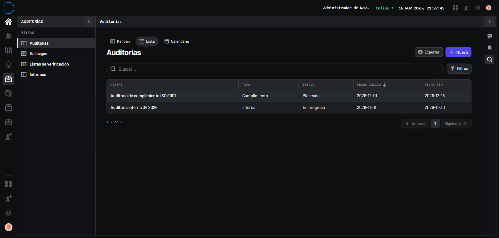
Figura 13. Auditorías con nombre, tipo, estado y responsable.
El módulo de calidad permite planificar auditorías internas y externas, ejecutarlas con listas de verificación y registrar hallazgos con severidad. Cada hallazgo alimenta el plan de acción y puede disparar una automatización de seguimiento.
Auditorías: alcance, tipo, fechas y estado (planificada, en curso, finalizada).
Listas de verificación: puntos de control con resultado por ítem.
Hallazgos: descripción, severidad, responsable y estado del plan de acción.
Informes: consolidado de resultados por auditoría.
✓
Un hallazgo no se cierra solo Cada hallazgo necesita responsable, fecha compromiso y evidencia de cierre. Si el plan de acción se queda sin dueño, la automatización lo recuerda, pero no lo resuelve.
4.6 Facturación
Figura 14. Facturas con folio, cliente, estado, total, moneda y vencimiento.
Facturación emite documentos, registra pagos y controla saldos. Una factura recorre cinco estados posibles: borrador, enviada, pagada, vencida y cancelada.
Facturas: folio, cliente, fechas de emisión y vencimiento, subtotal, impuestos, total y saldo.
Líneas: descripción, cantidad, precio unitario, tasa de impuesto e importe.
Pagos: monto, fecha, método y referencia; actualizan el saldo de la factura.
Cobranza: filtro de vencidas para priorizar la gestión de cobro.
4.7 Inventario
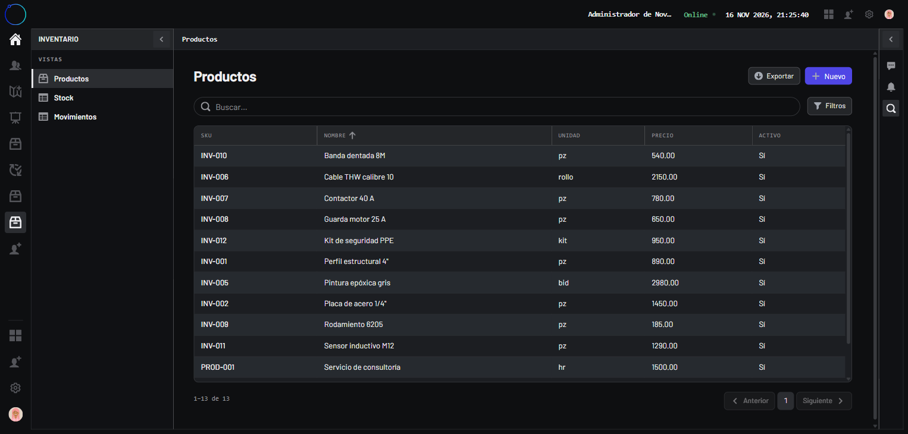
Figura 15. Productos con SKU, nombre, unidad, precio y estado.
El inventario mantiene el catálogo de productos y las existencias por almacén. Cada entrada, salida o ajuste queda registrado como movimiento, con referencia y fecha, lo que permite reconstruir la historia de cualquier artículo.
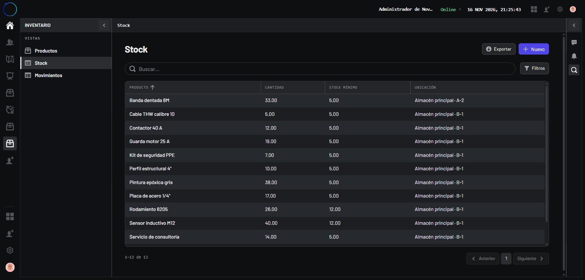
Figura 16. Existencias: cantidad disponible, mínimo configurado y ubicación física.
Cuando la cantidad de un producto cae por debajo de su mínimo, el módulo emite una alerta de reposición que aparece en el panel de inicio y puede disparar una notificación automática.
4.8 Automatización
Automatización es el orquestador de la suite. Escucha los eventos de los demás módulos y ejecuta procesos compuestos por pasos: consultar datos, obtener un registro, enviar un correo o generar una notificación.
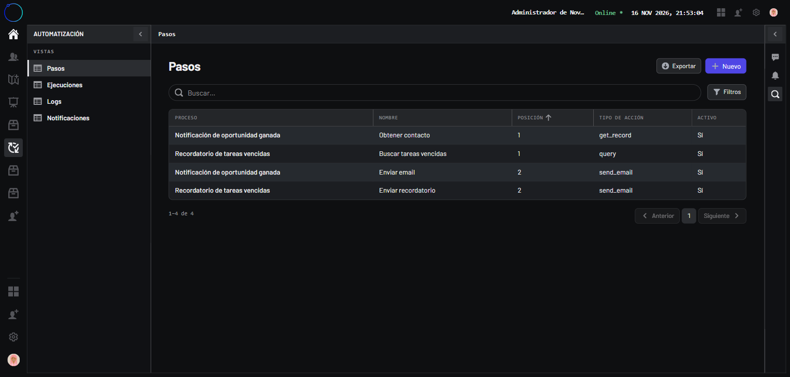
Figura 17. Pasos: cada fila indica el proceso al que pertenece, su posición y el tipo de acción.
Ejecuciones
La vista de ejecuciones muestra cada corrida de un proceso con su estado (en ejecución, completada, fallida o cancelada) y sus marcas de inicio y fin. Es la forma más rápida de comprobar que una automatización está funcionando.
Figura 18. Ejecuciones en vista de lista, ordenadas por fecha de inicio.
Registros
El registro de actividad conserva el detalle de cada ejecución: nivel (info, warn, error), mensaje y fecha. Sirve para diagnosticar por qué un proceso no hizo lo esperado.
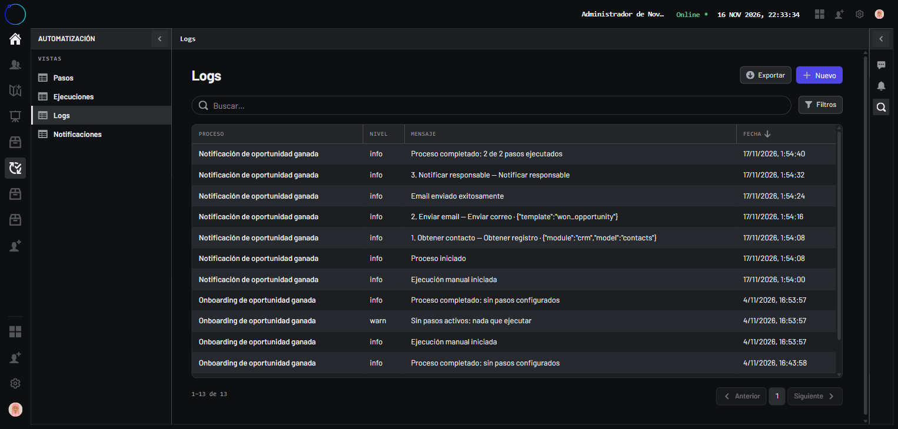
Figura 19. Registro de actividad: proceso, nivel, mensaje y fecha de cada evento.
Cada paso puede además generar una notificación legible para el equipo responsable. Las notificaciones se consultan en su propia vista y se marcan como leídas al revisarlas; el capítulo 5.4 muestra esa vista dentro del flujo de una automatización completa.
05
Flujos de trabajo guiados
Cómo viaja el dato entre módulos, paso a paso.
Este capítulo es el corazón del manual. Cada flujo describe una secuencia real de negocio, indica en qué módulo se inicia, qué ocurre automáticamente y qué debe revisar la persona responsable.
5.1 De la oportunidad a la entrega
Es el flujo principal de la suite y conecta CRM, Proyectos, Logística, Facturación e Inventario.
Figura 20. Flujo comercial: del prospecto a la cobranza. Las etiquetas indican el evento que dispara el paso siguiente.
Registre el prospecto. En CRM cree la empresa y el contacto, y genere un lead o directamente una oportunidad.
Trabaje la oportunidad. Muévala por las etapas del pipeline conforme avanza la conversación. Cada cambio queda en el historial.
Cotice. Genere la cotización con sus líneas y envíela. La cotización nace en estado borrador y pasa a enviada al compartirla.
Marque la aceptación. Al aceptar la cotización se disparan tres acciones en paralelo: se crea el proyecto, se prepara el envío y se emite la factura.
Ejecute el proyecto. En Proyectos ajuste el plan, asigne responsables y dé seguimiento al avance.
Entregue. En Logística asigne transportista y vehículo, y marque el envío como entregado al confirmar la recepción.
Registre el pago. En Facturación aplique el pago recibido; la factura pasa a pagada y el saldo queda en cero.
i
Qué revisar después Si la cotización se aceptó pero no aparece el proyecto, compruebe en Automatización → Registros el resultado de la ejecución. El registro indica el paso exacto y el error, si lo hubo.
5.2 De la contratación al proyecto
El flujo de talento cierra el círculo entre Recursos Humanos, CRM y Proyectos.
Publique la vacante en Reclutamiento con departamento, ubicación y rango salarial.
Registre candidatos y vincúlelos al puesto mediante una postulación.
Entreviste y evalúe. Cada entrevista deja resultado y calificación.
Emita la oferta y marque al candidato como contratado.
Revise el resultado automático: el candidato aparece como contacto en el CRM y se crea el proyecto de integración con las tareas iniciales.
5.3 Entrega de un envío y actualización de stock
Confirme que el producto existe en Inventario y que hay existencia suficiente.
Genere el envío en Logística, asigne almacén de origen, transportista y vehículo.
Actualice el estado del envío conforme avanza: preparación, en tránsito, entregado.
Al marcar entregado, se registra la actividad de entrega en el CRM y se genera el movimiento de salida en Inventario.
Verifique en Inventario que la existencia disminuyó y que el movimiento aparece con su referencia.
5.4 Automatización de procesos
Una automatización se compone de un disparador, uno o varios pasos y un resultado registrado. El orquestador traduce cada evento de negocio en una ejecución con su bitácora.
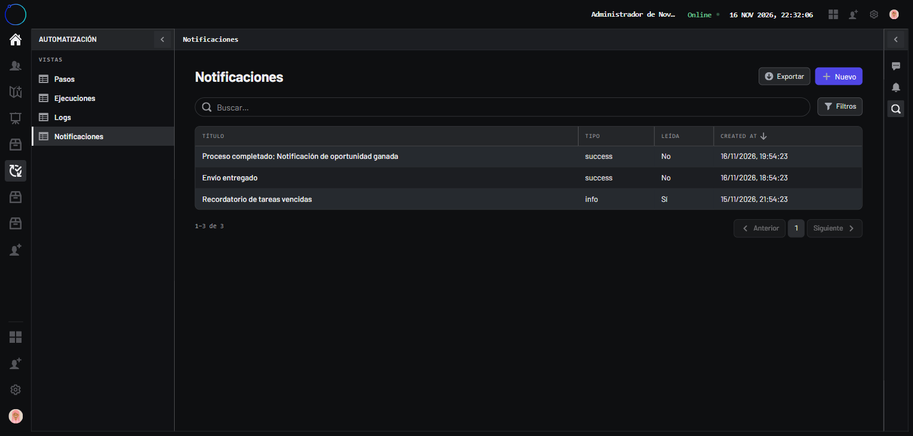
Figura 21. Notificaciones: resultado legible de las automatizaciones, con tipo y estado de lectura.
Ejemplo de una corrida
El proceso Notificación de oportunidad ganada se dispara con crm.opportunity.won. En la vista de registros se lee de abajo hacia arriba, del inicio al cierre:
Ejecución manual iniciada: alguien del equipo lanzó el proceso desde su ficha, sin esperar el evento.
Paso 1 · Obtener contacto: consulta el contacto del CRM asociado a la oportunidad ganada.
Paso 2 · Enviar email: envía la plantilla de bienvenida al correo del contacto.
Paso 3 · Notificar responsable: avisa al propietario de la oportunidad y deja la notificación en su bandeja.
Proceso completado: la ejecución queda como completada con el número de pasos ejecutados.
✓
Una corrida, tres rastros Cada ejecución deja huella en tres lugares: el estado de la ejecución, sus registros de actividad y las notificaciones enviadas. Si algo no ocurrió, alguno de los tres lo explica.
Tipo
Cuándo se genera
Ejemplo en la bandeja
success
Un proceso terminó bien o una entrega se confirmó.
Proceso completado · Envío entregado
info
Aviso o recordatorio que no exige acción inmediata.
Recordatorio de tareas vencidas
warn
Un paso se omitió o faltó un dato para continuar.
Proceso sin pasos configurados
Figura 22. Anatomía de una automatización: evento, proceso, pasos, ejecución y registro.
Cómo se lee
Evento: cualquier módulo publica un hecho de negocio; Automatización solo escucha.
Orquestador: recibe el evento y busca los procesos activos que lo declaran como disparador.
Proceso: tiene nombre, disparador y estado; si está inactivo, el evento se ignora.
Pasos: se ejecutan en orden de posición y cada uno declara un tipo de acción.
Ejecución: guarda estado, resultado y error de la corrida completa.
Registro y notificación: dejan la trazabilidad técnica y el aviso para las personas.
Los pasos se ejecutan en secuencia. Si uno falla, la ejecución queda con error y el registro señala el paso exacto.
Tipos de paso
Consultar (query): filtra registros por una condición.
Obtener (get_record): trae un registro concreto por identificador o referencia.
Correo (send_email): envía una plantilla con los datos del evento.
Notificar (notify): crea un aviso en la bandeja del usuario.
!
Idempotencia: el mismo evento dos veces Si una oportunidad se marca como ganada dos veces, el proceso comprueba si el proyecto ya existe antes de crearlo y reporta el segundo intento como omitido. Nunca se duplican proyectos, facturas ni envíos por repetir un evento.
Proceso
Disparador
Acción principal
Procesar cotización aceptada
crm.quote.accepted
Crea proyecto, envío y factura; notifica al responsable.
Onboarding de oportunidad ganada
crm.opportunity.won
Crea el proyecto y sus tareas iniciales.
Notificación de oportunidad ganada
crm.opportunity.won
Obtiene el contacto y envía un correo de bienvenida.
Seguimiento de nuevo lead
crm.lead.created
Programa la primera actividad de contacto.
Confirmación de entrega
logistica.shipment.delivered
Registra la actividad de entrega en el CRM.
Seguimiento de hallazgo
auditorias.finding.created
Notifica al responsable del plan de acción.
Onboarding de candidato contratado
reclutamiento.candidate.hired
Crea contacto y proyecto de integración.
Notificación de nuevo proyecto
projects.project.created
Avisa al equipo de entrega.
5.5 Ciclo de vida de una factura
La factura es el documento donde convergen la venta y la cobranza. Su estado determina las acciones disponibles.
Figura 23. Estados de una factura y transiciones permitidas.
Estado
Significado
Acción típica
Borrador
Documento en preparación; puede editarse por completo.
Completar líneas y datos del cliente.
Enviada
Entregada al cliente; inicia el plazo de pago.
Dar seguimiento a la fecha de vencimiento.
Pagada
Saldo cubierto total o parcialmente con pagos registrados.
Conciliar el pago con el estado de cuenta.
Vencida
El plazo expiró sin pago completo.
Gestionar cobranza y registrar el pago recibido.
Cancelada
Documento anulado; no afecta la cobranza.
Emitir una nueva factura si corresponde.
5.6 Casos de uso por rol
Cada rol de la organización tiene un conjunto reducido de tareas frecuentes. Este mapa sirve para explicar a una persona nueva qué le corresponde y qué módulos necesita.
Rol
Responsabilidad principal
Módulos que usa
Administrador
Altas de personas, roles, alcance y configuración de la organización.
Administración, Aplicaciones
Ventas
Empresas, contactos, oportunidades, actividades y cotizaciones.
CRM
Proyectos
Plan del proyecto, tareas, hitos, dependencias y avance.
Proyectos
Logística
Almacenes, transportistas, envíos y confirmación de entrega.
Logística, Inventario
Recursos Humanos
Vacantes, candidatos, entrevistas y ofertas.
Reclutamiento
Calidad
Auditorías, listas de verificación y hallazgos con plan de acción.
Auditorías
Finanzas
Facturación, registro de pagos y cobranza.
Facturación
Almacén
Catálogo de productos, existencias y movimientos.
Inventario
Operaciones
Diseño de procesos, pasos y monitoreo de ejecuciones.
Automatización
i
El rol no es el organigrama Los roles agrupan permisos por función, no por puesto. Varias personas pueden compartir un rol y una persona puede acumular dos; lo que nunca debe ocurrir es que un rol quede sin nadie que lo ejerza.
Señales de un alcance mal definido
Una persona ve módulos que no abre nunca y recibe notificaciones que no le corresponden.
Un módulo tiene registros activos pero ningún dueño identificable en la lista de miembros.
Los permisos cambian sin que quede rastro de quién los autorizó ni por qué.
Alguien usa la cuenta de un compañero porque «su rol no lo deja» hacer una tarea propia.
Figura 24. Casos de uso principales por rol.
Cómo usar este mapa
Incorporación: entregue a la persona nueva solo los módulos de su rol y las tareas del diagrama.
Alcance: si alguien necesita un módulo que no aparece en su rol, revise primero los permisos antes de ampliarlos.
Auditoría: un usuario con acceso a más módulos de los que su rol exige es un hallazgo de control interno.
Cobertura: cada tarea del mapa debe tener un responsable; las tareas sin dueño son las que se vencen.
El diagrama agrupa las tareas por rol operativo, no por persona: una misma persona puede acumular dos roles en organizaciones pequeñas.
✓
Formación en cuatro pasos Muestre el mapa al nuevo integrante, abran juntos el módulo de su rol, cree un registro de prueba y revíselo con su responsable antes de tocar datos reales.
06
Buenas prácticas
Recomendaciones para que el sistema siga siendo útil con el paso del tiempo.
6.1 Higiene de datos
Una empresa, un registro. Antes de crear una empresa, búsquela por nombre o por identificador fiscal; los duplicados contaminan los reportes y el pipeline.
Nombres legibles. Use el nombre comercial en el campo de nombre y la razón social completa en el campo legal.
Fechas reales. La fecha de cierre estimada debe reflejar la expectativa actual, no la fecha de creación de la oportunidad.
Estados honestos. Un envío es «entregado» cuando el cliente lo recibió, no cuando salió del almacén.
Notas breves y fechadas. Registre el contexto en las notas del registro, no en correos externos.
6.2 Trabajo en equipo
Asigne responsable a toda oportunidad, proyecto y envío. Un registro sin dueño no se trabaja.
Use actividades para acordar el siguiente paso con fecha; el panel de inicio le recordará las vencidas.
Revise el panel general al inicio de la jornada: concentra lo vencido y lo que está por cerrar.
No comparta credenciales. Cada persona debe entrar con su propia cuenta para que la bitácora sea confiable.
6.3 Rendimiento de la interfaz
Las listas grandes se paginan; use el buscador y los filtros antes de recorrer páginas.
El panel de inicio refresca cada 30 segundos; si acaba de modificar algo, use el botón Actualizar de la tarjeta correspondiente.
Si una vista tarda en pintar, espere a que aparezca la primera fila antes de interactuar: la carga es asíncrona.
Exporte a hoja de cálculo cuando necesite analizar más de unas decenas de registros.
6.4 Seguridad y respaldo
Una cuenta por persona. Las cuentas compartidas rompen la trazabilidad: la bitácora deja de decir quién hizo qué.
Retire el acceso el mismo día. Cuando alguien deja el equipo, desactive su membresía; los registros que eran suyos se reasignan, no se borran.
Respalde antes de migrar. Genere un respaldo pg_dump de la base y consérvelo fuera del contenedor antes de aplicar cambios de esquema.
Pruebe la restauración. Un respaldo que nunca se ha restaurado es una suposición, no una garantía.
Revise la auditoría. Los cambios de permisos y las eliminaciones quedan registrados; revíselos con la misma frecuencia con que revisa los reportes.
07
Preguntas frecuentes
Respuestas a las dudas más habituales de operación.
7.1 Acceso y sesión
¿Qué hago si olvidé mi contraseña?
Solicite el restablecimiento a un administrador de la organización. En el ambiente de demostración, la contraseña de las cuentas de equipo es Demo2026!.
¿Por qué no veo un módulo que mi compañero sí ve?
Los módulos visibles dependen del rol y del alcance asignados. Pida a un administrador que revise sus Roles y accesos.
¿La sesión caduca?
El token de acceso es de corta duración y se renueva automáticamente mientras la pestaña permanezca abierta. Al cerrar el navegador se requiere un nuevo inicio de sesión, salvo que se haya marcado «Recordar correo».
¿Puedo usar dos organizaciones con el mismo usuario?
Sí. Un mismo correo puede pertenecer a varias organizaciones; el conmutador de organización cambia el contexto sin cerrar la sesión.
7.2 Datos y módulos
Una cotización se aceptó y no se creó el proyecto. ¿Qué reviso?
Abra Automatización → Registros y localice la ejecución más reciente del proceso «Procesar cotización aceptada». El mensaje indica el paso que falló. Si el proyecto ya existía, la ejecución lo reporta como omitido para no duplicar.
¿Por qué una factura aparece vencida si el cliente ya pagó?
Porque el pago no se ha registrado. Registre el pago en Facturación; el estado pasa a pagada cuando el saldo queda cubierto.
¿Puedo eliminar un registro?
Sí, siempre que su rol lo permita. La eliminación es lógica: el registro deja de aparecer en las vistas pero se conserva para auditoría.
¿Cómo exporto un reporte?
Use el botón Exportar de la vista. Se exporta exactamente lo que está viendo, incluidos los filtros activos.
¿El tablero kanban funciona en todos los módulos?
Los módulos base (CRM y Proyectos) ofrecen kanban completo. En los módulos añadidos, la vista de lista es la más completa; si el tablero aparece vacío, use la lista.
¿Dónde se guardan los archivos adjuntos?
En el almacenamiento de la plataforma, asociados al registro correspondiente. El límite de tamaño lo define el administrador.
08
Glosario
Vocabulario común para hablar del sistema sin ambigüedades.
Término
Definición
Actividad
Tarea, llamada o reunión asociada a un registro del CRM con fecha y responsable.
Alcance
Conjunto de módulos a los que un usuario tiene acceso dentro de su organización.
API
Interfaz por la que dos programas se comunican; el kernel la usa para llamar a cada módulo.
Bitácora
Registro cronológico de lo que hizo el sistema o un usuario, con nivel y mensaje.
Cliente
Empresa o persona que compra; en el sistema siempre es un registro de CRM.
Contenedor
Unidad aislada donde corre un servicio del sistema, con sus propias dependencias.
Cotización
Documento comercial con líneas, impuestos y vigencia que formaliza una oferta.
Disparador
Evento o condición que inicia un proceso automatizado.
Ejecución
Una corrida concreta de un proceso automatizado, con estado y bitácora.
Esquema
Conjunto de tablas de un módulo dentro de la base; cada uno lleva el prefijo mod_.
Evento
Hecho de negocio publicado por un módulo (crm.quote.accepted) que otros pueden escuchar.
Hallazgo
Desviación detectada en una auditoría, con severidad y plan de acción.
Idempotencia
Propiedad por la cual repetir un evento no duplica registros: el segundo intento se omite.
Indicador
Cifra resumida de una vista o del panel: total vendido, facturas pendientes, envíos activos.
Módulo
Aplicación independiente con sus datos, vistas y permisos que se integra al resto.
Notificación
Aviso dirigido a un usuario que requiere una acción o informa de un resultado.
Oportunidad
Venta potencial con importe, probabilidad y etapa dentro del pipeline.
Organización
Espacio aislado donde viven usuarios, módulos y registros de una empresa.
Paso
Acción concreta dentro de un proceso: consultar, obtener un registro, enviar correo o notificar.
Pipeline
Secuencia de etapas por las que avanza una oportunidad hasta cerrarse.
Registro
Unidad de información del sistema: una empresa, un proyecto, una factura.
Rol
Conjunto de permisos que determina qué puede ver y hacer un usuario.
Token de acceso
Credencial de sesión de vida corta que el navegador envía en cada petición.
Vencimiento
Fecha límite de cobro de una factura; se calcula al emitir según las condiciones pactadas.
Vista
Presentación de un conjunto de registros: lista, tablero o calendario.
09
Anexos
Referencia visual para administradores y soporte.
9.1 Arquitectura en una página
Novvus se compone de una capa web, un kernel que concentra autenticación y enrutamiento, los módulos de negocio y una base de datos PostgreSQL compartida con aislamiento por organización.
Figura 25. Arquitectura por capas. El kernel es el único punto de entrada a los módulos.
9.2 Diagrama de despliegue
Todo el sistema se ejecuta en contenedores sobre WSL2. Solo el puerto 8077 se publica en el equipo del usuario; el kernel y la base de datos permanecen en la red interna.
Figura 26. Despliegue: navegador, capa web, kernel, módulos y base de datos.
9.3 Modelo de datos
El modelo siguiente muestra las entidades principales y sus relaciones. Cada módulo añade su propio esquema; el detalle completo está en el reporte técnico.
Una empresa concentra el resto: contactos, oportunidades y proyectos cuelgan de ella; por eso el CRM es la puerta de entrada natural.
La oportunidad se parte en dos: al cotizar nace la cotización y al ganar nace el proyecto, ambos enlazados a la misma oportunidad.
La cotización termina en cobro: una cotización aceptada emite la factura, la factura tiene líneas y recibe uno o varios pagos.
Todas las tablas comparten convenciones: identificador UUID, org_id para el aislamiento, marcas de creación y actualización, y borrado lógico con deleted_at.
Figura 27. Entidades principales: empresa, contacto, oportunidad, cotización, proyecto, factura y pago.
Reglas que sostienen el modelo
Integridad: las relaciones usan llaves foráneas; no quedan facturas sin cotización ni pagos sin factura.
Aislamiento: cada consulta filtra por organización, de modo que dos empresas comparten base sin verse entre sí.
Historia: el borrado es lógico y los cambios relevantes se registran en la bitácora del registro.
Importes: se guardan como numeric(14,2) con moneda explícita; nunca como texto ni coma flotante.
Fechas: las de negocio son date y las de sistema timestamptz, para no perder la zona horaria.
Extensiones: cada tabla reserva ext y custom para datos de módulos, sin alterar el esquema base.
El modelo completo, con las 116 tablas de la instalación de demostración, se detalla en el reporte técnico.
9.4 Contenido del paquete
Ruta
Contenido
Manual-Usuario-Novvus.pdf
Este documento en formato PDF.
Reporte-Tecnico-Novvus.pdf
Especificaciones, arquitectura y proceso de construcción.
documentacion/
Fuentes HTML de ambos documentos y hoja de estilo.
capturas/
Las 19 capturas de pantalla en PNG.
diagramas/
Los 8 diagramas en SVG vectorial.
codigo/
Código fuente del SDK y de los módulos personalizados.
docker/
Configuración de despliegue y respaldos de base de datos.
LEEME.md
Instrucciones de instalación y puesta en marcha.
9.5 Verificación rápida del paquete
Antes de dar por recibida la entrega, conviene comprobar que todo abrió correctamente. Son cinco minutos y evitan descubrir un archivo faltante cuando ya se necesita:
Comprobación
Cómo hacerla
Documentos legibles
Abra los dos PDF y recorra el índice: las páginas deben coincidir y las figuras verse completas.
Capturas presentes
La carpeta capturas/ debe contener 19 archivos PNG con nombres numerados del 01 al 19.
Diagramas vectoriales
Los 8 SVG de diagramas/ se abren en el navegador y conservan nitidez al ampliarlos.
Código fuente
codigo/ incluye el SDK y los módulos; cada módulo trae su manifiesto y sus migraciones.
Despliegue
docker/ contiene el archivo de composición y el respaldo .dump de la base.
✓
Si algo no abre Copie la carpeta completa antes de extraer los archivos: algunos visores de PDF pierden las rutas relativas de las figuras si el documento se abre desde dentro del ZIP.
9.6 Para continuar
Este manual cubre la operación diaria. Los temas que quedan fuera se resuelven en el reporte técnico o con el responsable de la plataforma:
Detalle de arquitectura y decisiones: reporte técnico, capítulos 2 y 3.
Esquema completo de las 116 tablas: reporte técnico, capítulo 5, y las migraciones de cada módulo.
Resultados de las pruebas: reporte técnico, capítulo 11.
Alta de usuarios, roles y permisos: capítulo 3 de este manual.
Con el ambiente levantado y las cuentas de demostración, cualquier persona puede recorrer el flujo comercial completo en menos de media hora y comprobar por sí misma lo que describen estas páginas.
Novvus · Manual de usuario · Versión 1.0 · Noviembre de 2026
 Business Suite
Business Suite